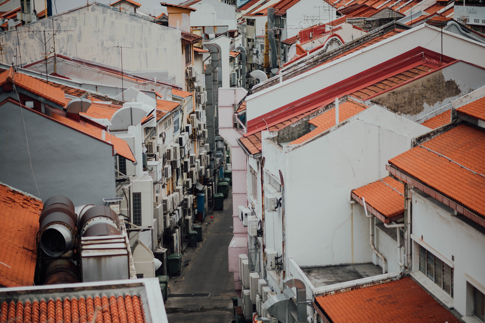
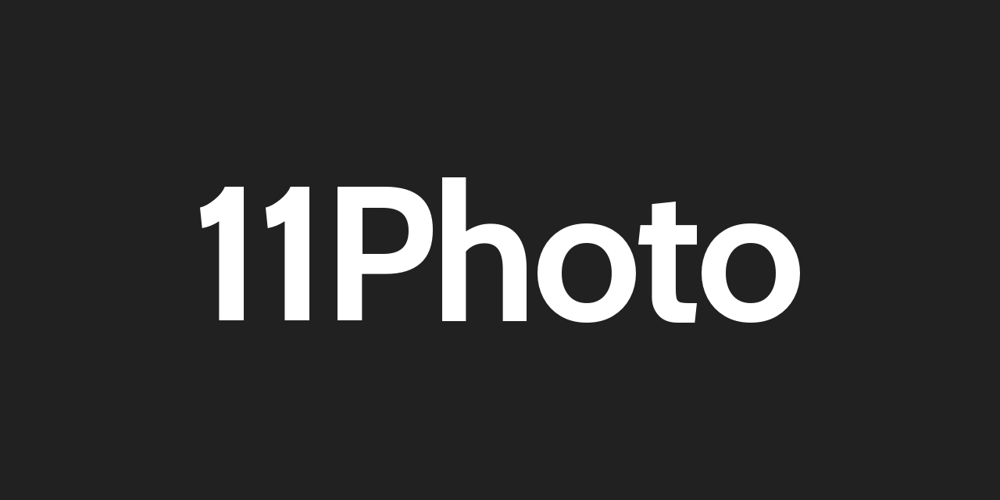

11Photo uses the incredibly powerful static site generation engine, 11ty.

Using 11Photo was designed to be as simple as possible, whilst still allowing for loads of customisation.

11Photo uses Tailwind for all of it's styles, so changing the background colour is as simple as changing one line of code.

So, what are you waiting for?